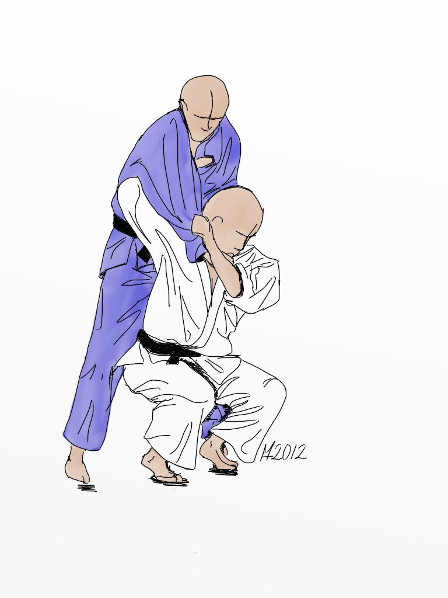

Seoi Nage
De schouderworp is een van de meest gebruikte worpen in judo. Je trekt je tegenstander naar voren en draait je in om hem over je schouder te werpen.


O Goshi
De grote heupworp waarbij je je heup tegen die van je tegenstander plaatst en hem over je heup heen werpt.
Uchi Mata
De binnendijworp waarbij je met een been het standbeen van je tegenstander wegveegt terwijl je hem met je armen naar achteren trekt.